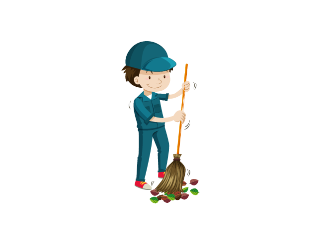

Una aplicación, un mañana mejor.
Descubre mejores formas de reutilizar eso que llamas basura, ya se trate de desperdicios orgánicos o electos que son reutilizase o se pueden reciclar como cartón, papel, plástico o vidrio. Entérate de nuevas formas de creatividad y decoración que ayudan a tu bolsillo, mejorando al mismo tiempo el planeta en que vives.
-

Ayuda al medio ambiente de tú ciudad.
Aprende como organizar y clasificar tus desperdicios orgánicos, utilizarlos de manera inteligente para ayudar a tu entorno y el planeta ha tener un futuro esperanzador
-

Ayuda al medio ambiente de tú ciudad.
Este es el momento de tomar aciones concretas para ayudar al planeta a seguir con vida. Cualquier esfuerzo es pequeño comparado con los múltiples beneficios que recibirá tu comunidad cada vez decidas involucrarte activamente en conversaciones con personas influyentes que buscan un mejor medioambiente par todos
-

Todo empieza en casa
Lanzamos la primera aplicación capaz de ayudarte en la tarea mas aburrida de tu casa, sacar la basura. Con un click sabrás como clasificar reutilizar o desechar aquello que ya no estas utilizando en tu hogar, ademas recibirás ideas y consejos prácticos para convertir en dinero eso que piensas es basura.
Todo en uno
Con un click desde tú celular puedes identificar en cual recipiente debes depositar los diferentes tipos de basuras, establecer tiempos de recolección, además de saber cuales son los principales factores que más contaminan en tú localidad.
Descargala Ahora
Ayuda al planeta a conservar los recursos naturales y la biodiversidad participando activamente con los líderes comunitarios y personas influyentes en aspectos medio ambientales.
contatcanos@kanecom.com
Cuida tus vecinos
A la vuelta de tú casa, encuentras todo un ecosistema lleno de seres vivos y naturaleza esperando por ti. Sé parte de un frente activo que busca conservar los recursos naturales que nos pertenecen a todos.
contactanos@kanecom.com